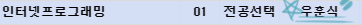
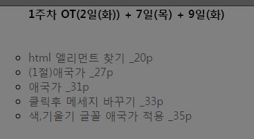
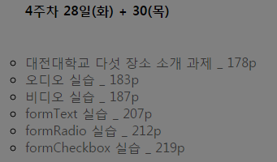
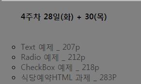

== Menu ==
Personal Site_My First Site

처음 수업의 이름인 '인터넷 프로그래밍' 이라는 과목을 듣게 되었을땐,
막상 무언가를 공개를 하려면 홈페이지를 작업을 하거나 인터넷에 어떤 매체를 이용해야되는데,
정작 그 매체를 타 회사의 제품들만 사용하는 본인의 모습을 보게 되는 것에서부터 시작하였습니다.
요약하자면 인터넷을 사용하지만, 제작하지는 못한다는점에서 이 수업을 하게 되었고
그 목표는 아주 조금이나마 이룬 것 같습니다.

수업을 들으면서 실습의 양도 이만큼씩이나 되었고, 같이 멘토&멘티(?)들과 같이 이야기도 하면서
인터넷을 조금은 사용할 수 있다는점에 이 수업을 듣기 전보다 나아졌다는 생각도 하게 됩니다.